ระบบคิว  มีลักษณะคล้ายกับ ระบบคิว
มีลักษณะคล้ายกับ ระบบคิว  เว้นแต่มีจำนวนบัฟเฟอร์จำกัดเท่ากับ
เว้นแต่มีจำนวนบัฟเฟอร์จำกัดเท่ากับ  บัฟเฟอร์ เมื่อบัฟเฟอร์
บัฟเฟอร์ เมื่อบัฟเฟอร์  เต็มทั้งหมดงานที่เข้ามาจะ ``หาย'' ไป ซึ่งไม่ได้รับการบริการจากระบบ
เต็มทั้งหมดงานที่เข้ามาจะ ``หาย'' ไป ซึ่งไม่ได้รับการบริการจากระบบ
สมมุติให้จำนวนบัฟเฟอร์  มากกว่าหรือเท่ากับ
มากกว่าหรือเท่ากับ  มิฉะนั้นเครื่องบริการบางเครื่องอาจไม่ได้ใช้งานเนื่องจากจำนวนบัฟเฟอร์ไม่พอ และระบบคิวจะทำงานที่ 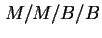
มิฉะนั้นเครื่องบริการบางเครื่องอาจไม่ได้ใช้งานเนื่องจากจำนวนบัฟเฟอร์ไม่พอ และระบบคิวจะทำงานที่ 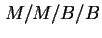
แผนภาพแสดงการเปลี่ยนสถานะของ กระบวนการเกิด-ดับ ของ คิว  แสดงในรูป 5.4
แสดงในรูป 5.4
คิว  มีอัตราการเข้าใช้งานระบบเท่ากับ
มีอัตราการเข้าใช้งานระบบเท่ากับ
และมีอัตราการบริการเท่ากับ
| (5.38) |
ในรูปของ Traffic Intensity
 จะได้
จะได้
| (5.39) |
ความน่าจะเป็นที่ไม่มีงานอยู่ในระบบ  เท่ากับ
เท่ากับ
| 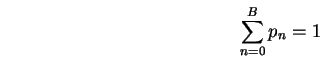 | (5.40) |
จากการขยายสมการจะได้
| (5.41) |
หรือเท่ากับ
| (5.42) |
ใช้สมการแสดง  เราสามารถหาค่าเฉลี่ยของจำนวนงานในระบบ 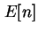 เท่ากับ
เราสามารถหาค่าเฉลี่ยของจำนวนงานในระบบ 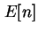 เท่ากับ
| (5.43) |
และค่าเฉลี่ยของจำนวนงานที่รออยู่ในคิว 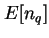 เท่ากับ
| (5.44) |
จากการขอเข้าใช้งานบริการระบบ หลังจากบัฟเฟอร์เต็ม 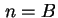 งานที่เข้ามาจะไม่ได้รับบริการ หรือสูญหายไป อัตราการขอเข้าใช้งานจริงในระบบ 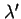 จะเท่ากับ
| (5.45) |
ค่า เรียกว่า อัตราการขอเข้าใช้งานจริง หรือ Effective Arrival Rate
ค่า 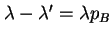 เรียกว่าอัตราการสูญหายของงาน หรือ Packet Loss Rate
เวลาตอบสนองสามารถหาได้จากกฎของ Little
| 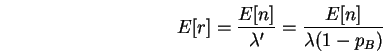 | (5.46) |
เช่นเดียวกันเวลาเฉลี่ยในการรอรับบริการเท่ากับ
| 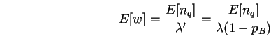 | (5.47) |
จากการเฝ้าสังเกตการทำงานของระบบเป็นเวลานานมาก  วินาที จำนวนงานที่เข้ามาในระบบ และได้รับการบริการจะเท่ากับ 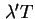
วินาที จำนวนงานที่เข้ามาในระบบ และได้รับการบริการจะเท่ากับ 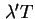
Busytime ของเครื่องบริการ  เครื่อง ที่บริการงานกลุ่มดังกล่าวเท่ากับ
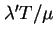 เพราะฉะนั้น ค่าภาระงาน (Utilization) ของเครื่องบริการแต่ละเครื่องจะเท่ากับ
เครื่อง ที่บริการงานกลุ่มดังกล่าวเท่ากับ
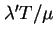 เพราะฉะนั้น ค่าภาระงาน (Utilization) ของเครื่องบริการแต่ละเครื่องจะเท่ากับ
| 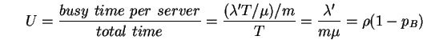 | (5.48) |
ความน่าจะเป็นที่ระบบเต็มใช้ตัวย่อว่า 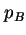 ในระบบคิว 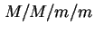 ที่มีจำนวนบัฟเฟอร์เท่ากับจำนวนเครื่องบริการ จะได้ความน่าจะเป็นที่ระบบเต็ม หรือความน่าจะเป็นที่งานสูญหายเท่ากับ
| (5.49) |
สมการดังกล่าวเรียกว่า Erlang's Loss Formula